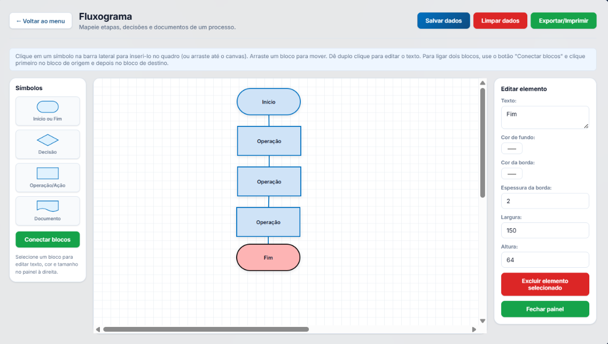

Fluxograma
O fluxograma ajuda a representar visualmente o caminho de um processo, mostrando etapas, decisões, documentos e conexões entre atividades. Ele é útil para entender como o processo acontece, identificar gargalos, visualizar retrabalhos e organizar melhor o fluxo de trabalho.
Como usar esta seção:
- Escolha um símbolo na barra lateral, como Início ou Fim, Decisão, Operação/Ação ou Documento.
- Clique no símbolo ou arraste-o para o quadro central.
- Dê duplo clique no bloco para editar o texto.
- Use o botão "Conectar blocos" para ligar uma etapa à outra.
- Selecione um bloco para ajustar texto, cor, borda, largura e altura no painel lateral.
- Use os botões superiores para salvar, limpar ou exportar/imprimir o fluxograma.
